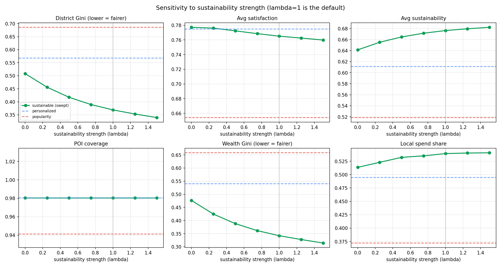
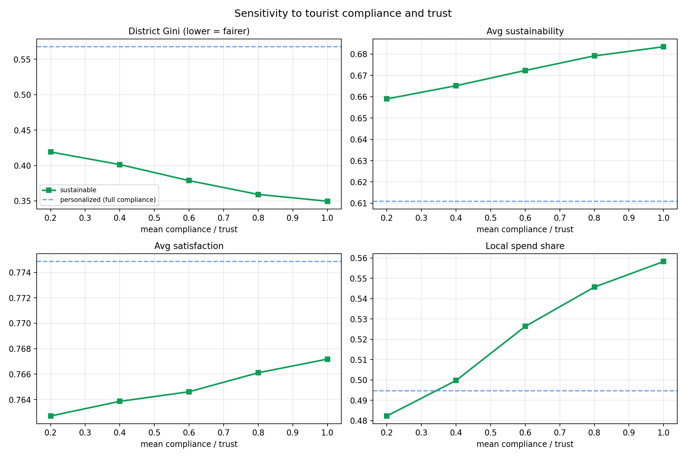
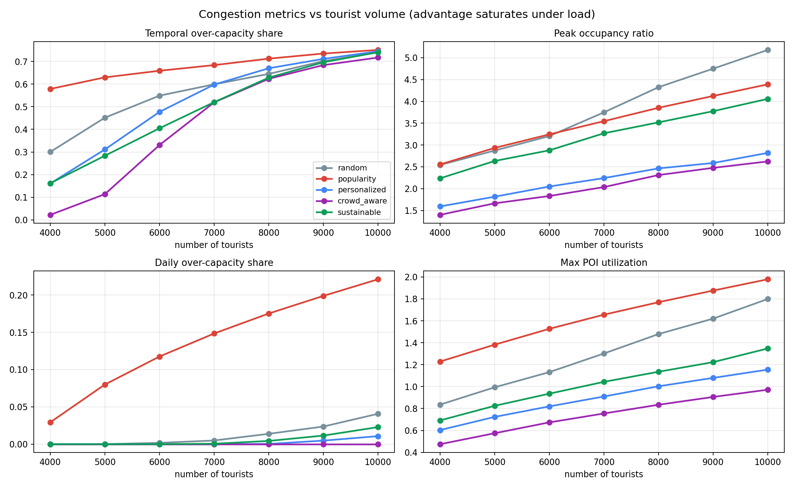
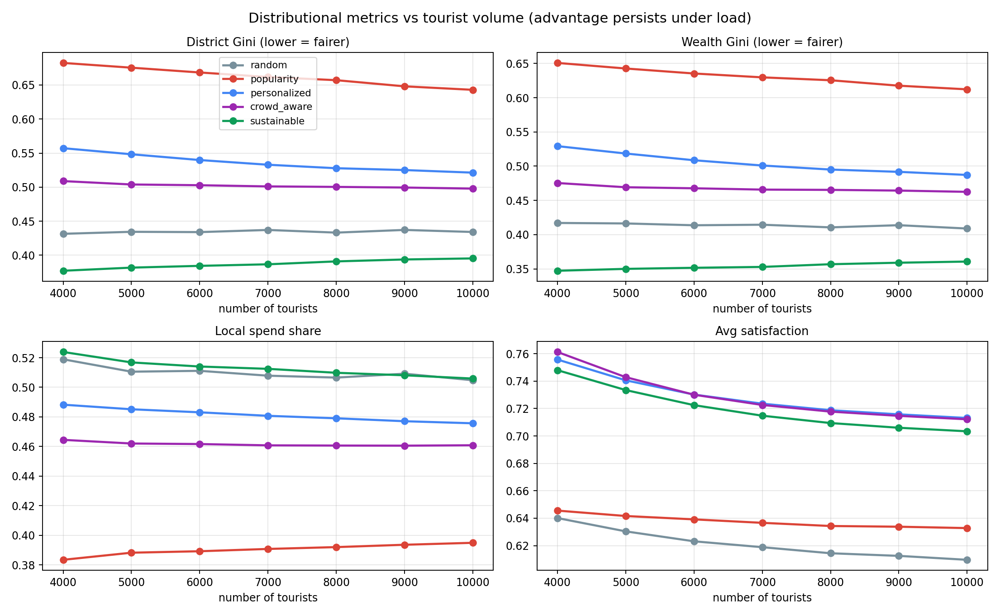

The sustainable recommender's three mechanisms, in isolation and combined. District and wealth fairness come almost entirely from the spread (under-visited-district) term; sustainability and local-spend come from the value terms; instantaneous over-capacity relief comes from the decongest term. The mechanisms partly conflict — spreading demand onto smaller POIs slightly raises over-capacity, which decongest alone avoids.
Parameter sensitivity
Generated by sensitivity.py

Sweeping the sustainability strength λ from 0 to 1.5. Higher λ lowers district and wealth Gini and raises sustainability for a small satisfaction cost; dashed lines are the popularity and personalized baselines.

Sweeping mean tourist compliance and trust from 0.2 to 1.0. As tourists comply less, the sustainable recommender's fairness and local-spend gains erode toward the personalized baseline.
Tourist-volume scaling
Generated by load_sweep.py

Congestion metrics versus tourist volume. The instantaneous over-capacity advantage of the smart strategies fades as the city saturates (around 7–8k tourists), while their daily-throughput advantage persists.

Distributional metrics versus tourist volume. District/wealth Gini and local-spend gaps stay roughly constant across crowd sizes — the fairness benefit is volume-independent.